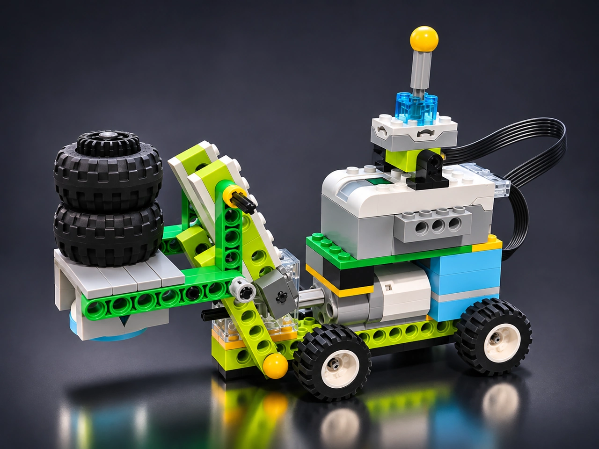

Οδηγίες κατασκευής (YouTube)
Παρακολούθησε το βίντεο για να κατασκευάσεις το Ανυψωτικό Μηχάνημα II. Για να ανοίξει, πληκτρολόγησε τον κωδικό του εργαστηρίου.
Η δεύτερη εκδοχή του κλαρκ στο EVAGELAK EDU LAB! Κατασκευάζουμε ένα ανυψωτικό μηχάνημα LEGO WeDo 2.0 που αξιοποιεί βραχίονες, γρανάζια και κινητήρα. Με τον προγραμματισμό δοκιμάζουμε αντίθετες φορές περιστροφής, αποστολή μηνυμάτων από τον αισθητήρα κλίσης και τρεις ακολουθίες που ενεργοποιούνται με μηνύματα.

Στη δεύτερη αποστολή μας κατασκευάζουμε ένα ανυψωτικό όχημα με βραχίονες που συγκρατούν ένα φορτίο. Παρατηρούμε τον συνδυασμό δοκών, οδοντωτών τροχών και κινητήρα, ώστε να κατανοήσουμε πώς η περιστροφή μεταδίδεται στον μηχανισμό. Στο πρόγραμμα ρυθμίζουμε την ισχύ του κινητήρα στο 8 και τον σταματάμε. Μέσα στην επανάληψη στέλνουμε μήνυμα με είσοδο την «Κίνηση πάνω-κάτω» του αισθητήρα κλίσης. Τρεις ανεξάρτητες ακολουθίες ενεργοποιούνται όταν φτάσουν τα μηνύματα 0, 3 και 9: σταμάτημα, περιστροφή προς τη μία φορά και περιστροφή προς την αντίθετη. Δοκιμάζουμε τι συμβαίνει κάθε φορά στον μηχανισμό και πώς μπορούμε να τον ελέγχουμε με ακρίβεια.
Η αρχική ακολουθία ορίζει ισχύ 8 και δίνει εντολή σταματήματος. Μέσα στην «Επανάληψη» η «Αποστολή μηνύματος» μεταφέρει δεδομένα από τον αισθητήρα κλίσης («Κίνηση πάνω-κάτω»). Κάτω από αυτήν υπάρχουν τρεις διαφορετικές ακολουθίες: μήνυμα 0 → Σταμάτημα, μήνυμα 3 → περιστροφή δεξιά και μήνυμα 9 → περιστροφή αριστερά.

Βίντεο οδηγιών συναρμολόγησης με πρόσβαση μέσω κωδικού του εργαστηρίου.
Παρακολούθησε το βίντεο για να κατασκευάσεις το Ανυψωτικό Μηχάνημα II. Για να ανοίξει, πληκτρολόγησε τον κωδικό του εργαστηρίου.
Δες το Ανυψωτικό Μηχάνημα II στο βίντεο παρουσίασης.
Άνοιγμα στο YouTube ↗